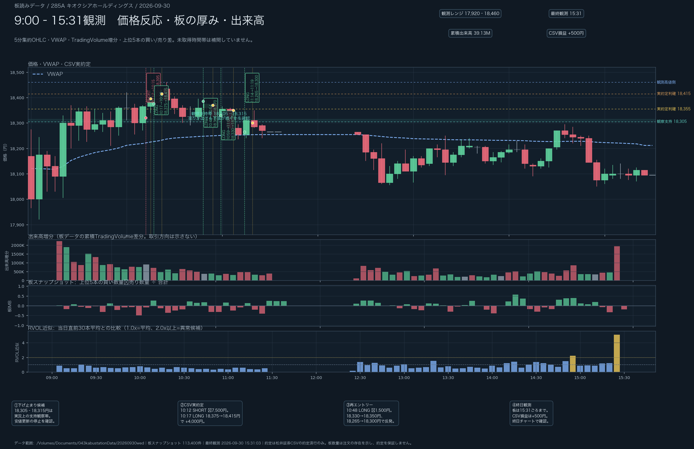
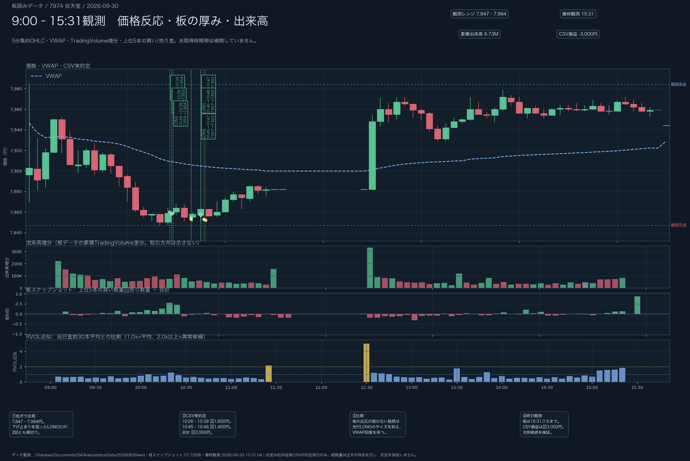
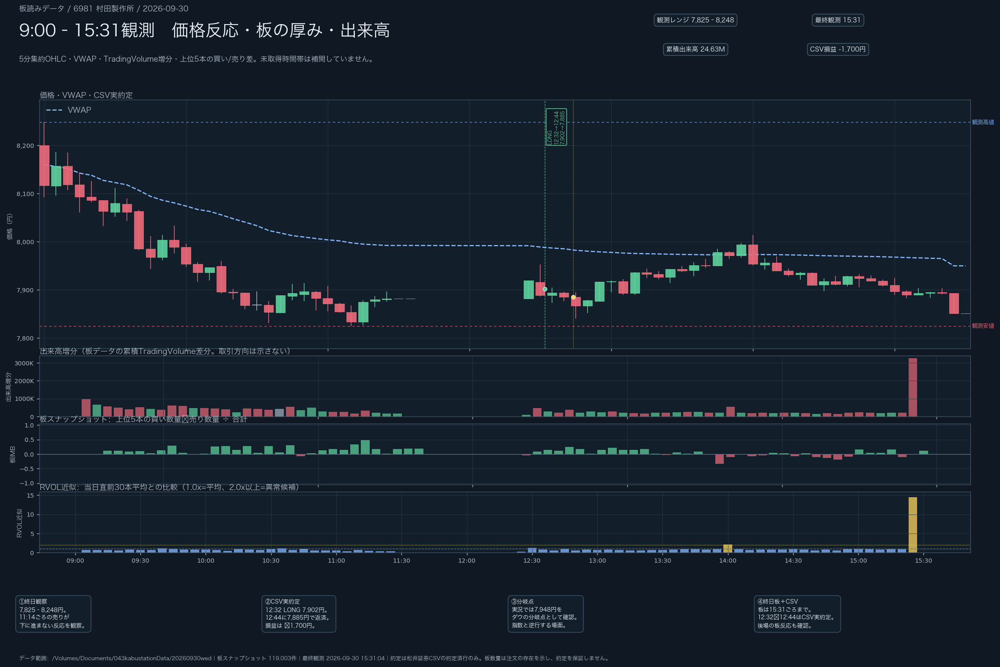
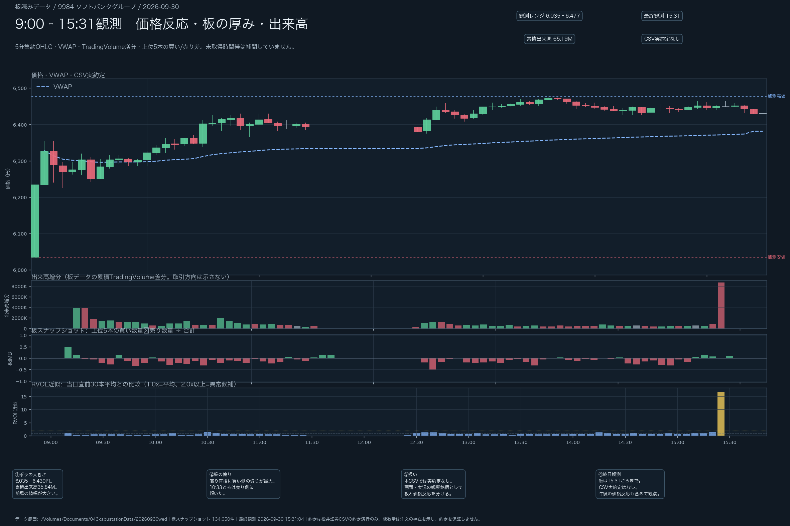
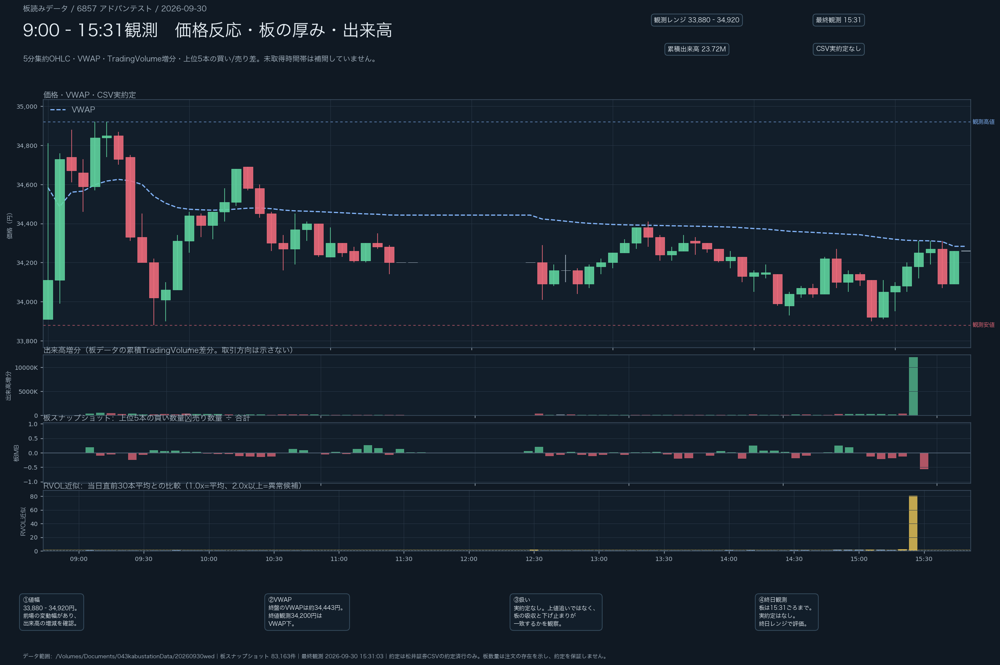
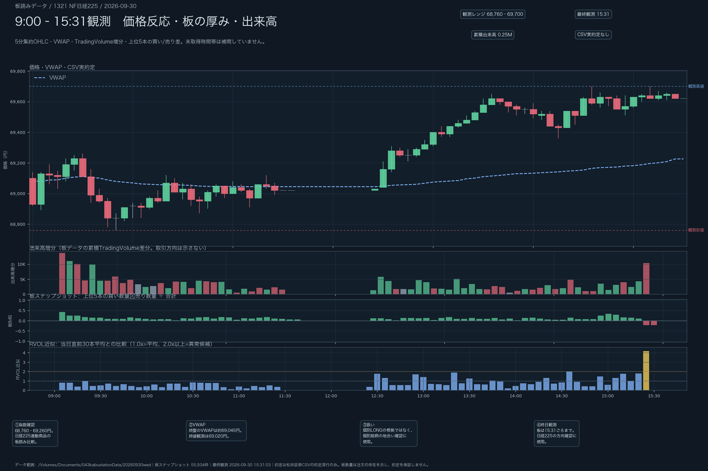

2026年9月30日（水）日本株デイトレード日誌｜285A・7974・6981と板読み
CSV確認済み粗損益：−4,200円（手数料・税引前概算）。285Aは+500円、7974は−3,000円、6981は−1,700円。9984・6857・1321は今回のCSVで実約定未確認。
0. 本日の結論
本日の中心テーマは、下方向の地合いまたは銘柄個別の下落の中で、売りが出ても価格が進まない場所を反転期待値ZONEとして読めるかだった。厚い買い板やRVOL上昇だけで反転を確定せず、安値更新の停止、後続足の縮小、VWAP・指数との位置関係、無効化ラインを合わせて判断する。
1. 朝の環境認識
US100
- 9:29時点のWilliams %Rは約−47で中間付近。
- 前日の2時ごろからのレンジを上抜け、上昇後に同じ価格帯を試すダブルトップ状。
- 下降トレンドラインを上抜け、カップ・アンド・ハンドルのハンドル支持を割らずに戻す形を観察。
- 月足・週足はN字のダウで上方向、日足は高値付近のクラスター／レンジとして見た。
日経225
- 日足はレンジ上限付近。60EMAは上向きとの認識。
- 9:37ごろは下げたが本日安値を更新できず戻し、下方向の継続は未確認。
- 「%Rではまだ上方向で山がある」は日経平均の話で、285Aの指標とは分ける。
- 指数が上向きでも、個別の買いが続き期待どおり加速するとは限らない。
価格・方向・出来高は実況時点の観察を含む。市場データで独立検証できた部分は、下記の板JSONL・松井証券CSVを優先する。
2. 前場の実況タイムライン
| 時刻 | 銘柄・対象 | 観察／本人の説明 | 確度 |
|---|---|---|---|
| 09:29 | US100 | %R約−47。レンジ上抜け、ハンドル支持を観察。 | 実況観察 |
| 09:32 | 9984 | 6,252円、本日安値6,225円との画面読み取り。約4.97%ギャップアップ。 | 画面・実況観察 |
| 09:37 | 日経225 | 下げたが本日安値を更新できず戻す。 | 実況観察 |
| 09:24 | 6762 TDK | 3,000円付近で約15万株の大出来高があったとの後日の振り返り。 | 実況観察・板未照合 |
| 09:44 | 6762 TDK | それまでの支持帯を下抜けた場面を、セル候補として振り返った。 | 実行・約定は未確認 |
| 10:02 | 285A | サポレジが効き、ピンバーから上昇したとの報告。 | 実況観察 |
| 10:12–10:22 | 285A | SHORT損切り後、日経連動のLONG。18,445円の高値更新を後に訂正。 | CSVで一部確認 |
| 10:26–10:48 | 7974 | 7,850円付近の売り吸収を見てLONG。初回・再エントリーとも損切り。 | CSVで確認 |
| 10:48–11:07 | 285A | 低ボラの中で再度LONG。実況の18,355円利確とは別に、CSVで2回の決済を確認。 | CSVで確認 |
| 11:08 | 285A | 下方向を見てSHORTを検討。 | 実行は未確認 |
| 11:12 | 285A | 大陰線後に下がらない反応、ピンバー98,000株との報告。 | 数値・約定対応は未確認 |
| 11:14–11:19 | 285A | 後半の反発をLONG。18,330円付近で利確したとの実況。 | CSVで18,265→18,300を確認 |
| 11:55ごろ | 6762 TDK | 9:44セル候補を振り返り。リスク約4,400円、利確候補約8,200円という想定を共有。 | 実約定・SLは未確認 |
| 12:32–12:44 | 6981 | LONG 7,902円→7,885円、100株。 | CSVで−1,700円を確認 |
| 12:45–12:48 | 6981 | CSV返済後の時間帯に下落し、支えられて7,911円方向へ戻したとの実況。 | 実況観察・板は取得済み |
3. 285A キオクシア｜下げ止まりと反転期待値ZONE
実況では18,305円付近を割らず、約14万株の売りが出ても下がらなかったと観察した。この「売りの努力に対して価格の下落結果が小さい」という読みは、下落停止型・出来高反転の候補条件に合う。
反転期待値ZONEの条件
- 陰線・大出来高・売り板など、下方向の圧力を確認する。
- 安値更新が止まり、後続足が縮小するかを見る。
- 買い板の厚さではなく、価格が下がらない反応を確認する。
- 18,305–18,315円を割った場合の無効化を先に決める。
- VWAPまたは直近戻り高値までの値幅とリスクを比較してサイズを決める。
今回のCSV実績
- 10:12 SHORT 18,320→18,395円：−7,500円
- 10:17 LONG 18,375→18,415円：+4,000円
- 10:48 LONG 18,385→18,370円：−1,500円
- 10:59 LONG 18,330→18,350円：+2,000円
- 11:14 LONG 18,265→18,300円：+3,500円
4. TDK（6762）｜9:44サポート割れのセル候補
11:55ごろの振り返りでは、TDKの1分足・2分足で3,000円付近の価格帯を確認した。9:24ごろに約15万株の大きな出来高が出た後、いったん支えられた価格帯を下方向へ抜け、9:44ごろのサポート割れがセル候補になったという整理である。
パターンの読み
- 3,000円付近で買われた価格帯を、最初の観察基準にする。
- 大出来高の後に価格が上へ戻せず、支持帯を明確に割ったら下方向の継続候補とする。
- 利確候補は前日終値・前々日終値付近。振り返りではリスク約4,400円に対し、約8,200円の利確余地という想定が共有された。
確度と未確認
- 「高値ブレイクアップに沿ってのセル」という表現は残すが、どの高値・時間足を指すかは未照合。
- 今回の松井証券CSVにTDKの対応する実約定、正確なストップロス価格、数量はない。
- 実績トレードではなく、大出来高→支持崩れ→戻り売りを検証する仮説パターンとして記録する。
5. 6981 村田製作所・7974・9984・6857・1321の比較
| 銘柄 | 終日レンジ | 最終観測 | VWAP | 累積出来高 | 扱い |
|---|---|---|---|---|---|
| 7974 任天堂 | 7,847–7,984円 | 7,944円 | 約7,929円 | 672.74万株 | 下げ止まりLONGを2回試したが、支持が継続せずCSV損益−3,000円。 |
| 6981 村田製作所 | 7,825–8,248円 | 7,851円 | 約7,950円 | 2,463.27万株 | 12:32 LONG→12:44返済をCSV確認。粗損益−1,700円。昼休み以外は板確認済み。 |
| 9984 ソフトバンクG | 6,035–6,477円 | 6,430円 | 約6,381円 | 6,519.45万株 | ギャップアップ後の下落・反発を終日観察。CSV実約定なし。 |
| 6857 アドバンテスト | 33,880–34,920円 | 34,260円 | 約34,283円 | 2,372.34万株 | 高ボラ・レンジ・出来高増加を終日観察。CSV実約定なし。 |
| 1321 NF日経225 | 68,760–69,700円 | 69,620円 | 約69,226円 | 24.75万株 | 個別の方向確認に使う指数連動商品の終日観察。 |
6981 村田製作所の後場追記
実況では11:14ごろ、約10万株の売りが出ても価格が下がらない「中での強さ／支え」を観察し、LONGを検討した。その後、12:45〜12:48ごろに下落してから支えられ、7,911円方向へ戻す動きが報告された。一方、7,948円をダウの分岐点として、指数と村田製作所の方向が分かれる場面を意識していた。
CSVで確認できる実約定は、12:32に7,902円で100株LONG、12:44に7,885円で返済、−1,700円である。板JSONLは12:25以降15:31ごろまで取得できているため、12:32〜12:44の時間帯も板スナップショット・出来高・RVOL近似を確認できる。ただし、板数量は注文の存在を示すだけで、CSV約定の方向や因果を単独では確定しない。また、12:45〜12:48の実況観察はCSV返済後であり、今回のポジションを保有したままの反発とは扱わない。
同じ「下落後に止まったように見える形」でも、285Aは値幅と反発が複数回出た一方、7974は支持が続かなかった。出来高の突出だけでなく、価格反応の継続とVWAPへの戻りを確認する。6857は終盤でも価格がVWAPを下回り、上値追いを急がない整理とした。
6. 松井証券CSV実約定
| 銘柄 | 方向 | ENTRY | EXIT | 数量 | 粗損益 |
|---|---|---|---|---|---|
| 285A | SHORT | 10:12 / 18,320円 | 10:15 / 18,395円 | 100 | −7,500円 |
| 285A | LONG | 10:17 / 18,375円 | 10:22 / 18,415円 | 100 | +4,000円 |
| 7974 | LONG | 10:26 / 7,860円 | 10:39 / 7,854円 | 100 | −600円 |
| 7974 | LONG | 10:27 / 7,858円 | 10:39 / 7,853円 | 100 | −500円 |
| 7974 | LONG | 10:28 / 7,859円 | 10:39 / 7,854円 | 100 | −500円 |
| 7974 | LONG | 10:45 / 7,857円 | 10:47 / 7,853円 | 100 | −400円 |
| 7974 | LONG | 10:45 / 7,858円 | 10:47 / 7,853円 | 100 | −500円 |
| 7974 | LONG | 10:45 / 7,857円 | 10:48 / 7,852円 | 100 | −500円 |
| 285A | LONG | 10:48 / 18,385円 | 10:54 / 18,370円 | 100 | −1,500円 |
| 285A | LONG | 10:59 / 18,330円 | 11:07 / 18,350円 | 100 | +2,000円 |
| 285A | LONG | 11:14 / 18,265円 | 11:19 / 18,300円 | 100 | +3,500円 |
| 6981 | LONG | 12:32 / 7,902円 | 12:44 / 7,885円 | 100 | −1,700円 |
| 合計 | −4,200円 | ||||
CSVの状態欄は「−」だが、約定数・約定単価・約定時間が埋まった24行・12組を約定データとして集計した。手数料・税金は含めていない。6981の12:32〜12:44はCSV実績だが、板JSONLの取得範囲外である。
7. 9:00〜15:30軸の板読み・出来高チャート
板データは9:00〜11:35ごろと12:25〜15:31ごろ。チャートは9:00〜15:30の軸で、昼休みの空白だけを残している。価格、VWAP、CSV実約定、板IMB、出来高増分、RVOL近似を同じ時間軸で復習できるようにした。6981の12:32〜12:44はCSVマーカーと同時間帯の板反応を表示しているが、板数量だけで約定方向を確定してはいない。下部の4カードは、判断の根拠・実約定・再エントリー・終日観測を分けている。






8. 再現性のある判断ルール
285Aで機能した考え方
- 大陰線・大出来高・売り板などの圧力を見る。
- 安値更新が止まり、後続足が縮小するか確認する。
- 18,305–18,315円を無効化ライン候補にする。
- 指数が上でも個別の買いが続くかを見る。
- 直近戻り高値・VWAP・売り壁を分割利確候補にする。
7974で見直すこと
- 出来高の突出は買いの確定ではない。
- 「売られても下がらない」がその後も続くかを確認する。
- 一度損切りした同じ価格帯で再エントリーする場合は、根拠が更新されたかを確認する。
- 低ボラ銘柄では先行LONGのサイズを下げ、VWAP回復を待つ。
TDKのセル候補
- 9:24の大出来高は注目価格帯の合図として扱い、出来高だけで売らない。
- 支持帯の再テストと反発失敗を確認し、9:44の下抜けで初めてセル候補にする。
- ストップ位置と前日・前々日終値までの利確余地を先に決め、想定リスクと値幅が合わなければ見送る。
6981で見直すこと
- 売りが出ても下がらない反応は候補条件だが、指数と個別が逆向きなら反転確定とは扱わない。
- 7,948円の分岐点を回復できない、または板データが連続していない場合は、ロットを下げるか見送る。
- 「分からない」と感じた時点で撤退する判断は、再現性のあるリスク管理として残す。
判断順：大きなパターン → 指数・%R → 個別銘柄 → RVOL → 価格反応 → 板の吸収／継続 → ENTRY → 分割利確。
9. 本番確定の確認事項
- 午前・午後のJSONLを読み込み、6銘柄の板データを9:00〜15:31ごろまで確認した。
- 午後JSONLの検証結果は parse error 0、missing book rows 0。11:35〜12:25ごろは昼休みのため、チャート上も空白のままとした。
- 次のコマンドでチャートとmanifestを再生成した。
python3 /Users/th/Documents/TradeDayReport20260821/scripts/build_diary_20260930.py- CSVの実現損益は、約定済み24行・12組を集計して−4,200円。実況報告の18,355円・18,330円などとの対応が確認できないものは、観察欄に残した。
- 昼休み以外の未取得帯がないことを確認し、本日誌を本番確定版として保存した。
10. 保存先と根拠
松井証券CSV
/Users/th/Downloads/stockorder_20260930 (1).csv
CSVで約定単価・数量・時刻が埋まった24行・12組を採用。最終約定は6981の12:44。板JSONLは同時間帯も取得済みだが、板数量だけで約定方向・因果は確定していない。
実況メモ
記録範囲は9:24〜13:00ごろ。TDKのセル候補と6981の後場観察を追加し、音声・共有写真の価格・出来高は、独立検証できないものを観察／未確認として分離。